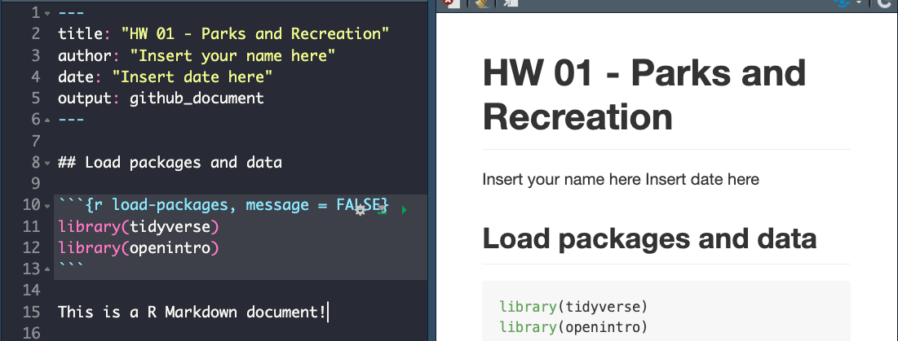

The goal of this assignment is to introduce you to R, RStudio, and integration with Canvas, which you’ll be using throughout the course both to learn the data science concepts discussed in the course and to analyze real data and come to informed conclusions.
This assignment assumes that you have reviewed the lecture titled “Meet the toolkit: Programming.” If you haven’t yet done so, please pause and complete it before continuing.
We’ve already thrown around a couple of new terms, so let’s define them before we proceed.
R: Name of the programming language we will be using throughout the course.
RStudio: An integrated development environment for R. In other words, a convenient interface for writing and running R code.
As the course progresses, you are encouraged to explore beyond what the assignments dictate; a willingness to experiment will make you a much better programmer! Before we get to that stage, however, you need to build some basic fluency in R. First, we will explore the fundamental building blocks of R and RStudio.
Before you can get started with the analysis, you need to make sure you:
For each assignment in this course you will go to a shared folder in RStudio Cloud that contains starter documents you will build upon when working on your assignment. In RStudio you will edit them, run them, view your results, and interpret them. In other words, all data analysis will happen in RStudio.
Lets walk through some of the steps that will get you ready for analysis.
Go to rstudio.cloud and then navigate to the course workspace via the left sidebar. It’s very important that you do this for two reasons:

Before you proceed, confirm that you are in the course workspace by checking out what’s on your top bar in RStudio Cloud.
RStudio is comprised of four panes.

2 + 2 here and hit
enter, what do you get?x <- 2 in
the Console and hit enter, what do you get in the
Environment pane? Importantly, this pane is also where
the Git interface lives. We will be using that
regularly throughout this assignment.Before we introduce the data, let’s warm up with some simple exercises.
The top portion of your R Markdown file (between the three dashed lines) is called YAML. It stands for “YAML Ain’t Markup Language”. It is a human friendly data serialization standard for all programming languages. All you need to know is that this area is called the YAML (we will refer to it as such) and that it contains meta information about your document.
Open the R Markdown (Rmd) file in your project, change the author name to your name.

R is an open-source language, and developers contribute functionality to R via packages. In this assignment we will use the following packages:pppiuhjg
We use the library() function to load packages. In your
R Markdown document you should see an R chunk labelled
load-packages which has the necessary code for loading both
packages. You should also load these packages in your Console, which you
can do by sending the code to your Console by clicking on the
Run Current Chunk icon (green arrow pointing right
icon).

Note that these packages also get loaded in your R Markdown environment when you Knit your R Markdown document.
The city of Seattle,
WA has an open data portal that includes pets registered in the
city. For each registered pet, we have information on the pet’s name and
species. The data used in this exercise can be found in the
openintro package, and it’s called
seattlepets. Since the dataset is distributed with the
package, we don’t need to load it separately; it becomes available to us
when we load the package.
You can view the dataset as a spreadsheet using the
View() function. Note that you should not put this function
in your R Markdown document, but instead type it directly in the
Console, as it pops open a new window (and the concept of popping open a
window in a static document doesn’t really make sense…). When you run
this in the console, you’ll see the following data
viewer window pop up.
View(seattlepets)
You can find out more about the dataset by inspecting its
documentation (which contains a data dictionary, name
of each variable and its description), which you can access by running
?seattlepets in the Console or using the Help menu in
RStudio to search for seattlepets.
üß∂ ‚úÖ ‚¨ÜÔ∏è Write your answer in your R Markdown document under Exercise 1, knit the document, commit your changes with a commit message that says ‚ÄúCompleted Exercise 1‚Äù, and push. Make sure to commit and push all changed files so that your Git pane is cleared up afterwards.
üß∂ ‚úÖ ‚¨ÜÔ∏è Write your answer in your R Markdown document under Exercise 2, knit the document, commit your changes with a commit message that says ‚ÄúCompleted Exercise 2‚Äù, and push. Make sure to commit and push all changed files so that your Git pane is cleared up afterwards.
The two lines of code can be read as “Start with the seattlepets data frame, and then count the animal_names, and display the results sorted in descending order. The ‘and then’ in the previous sentence maps to %>%, the pipe operator, which takes what comes before it and plugs it in as the first argument of the function that comes after it.”
seattlepets %>%
count(animal_name, sort = TRUE)üß∂ ‚úÖ ‚¨ÜÔ∏è Write your answer in your R Markdown document under Exercise 3. In this exercise you will not only provide a written answer but also include some code and output. You should insert the code in the code chunk provided for you, knit the document to see the output, and then write your narrative for the answer based on the output of this function, and knit again to see your narrative, code, and output in the resulting document. Then, commit your changes with a commit message that says ‚ÄúCompleted Exercise 3‚Äù, and push. Make sure to commit and push all changed files so that your Git pane is cleared up afterwards.
Let’s also look to see what the most common pet names are for various
species. For this we need to first group_by() the
species, and then do the same counting we did before.
Looks like many of those NAs were cats. Poor unnamed kitties…
seattlepets %>%
group_by(species) %>%
count(animal_name, sort = TRUE)## # A tibble: 16,823 × 3
## # Groups: species [4]
## species animal_name n
## <chr> <chr> <int>
## 1 Cat <NA> 406
## 2 Dog Lucy 337
## 3 Dog Charlie 306
## 4 Dog Bella 249
## 5 Dog Luna 244
## 6 Dog Daisy 221
## 7 Dog Cooper 189
## 8 Dog Lola 187
## 9 Dog Max 186
## 10 Dog Molly 186
## # … with 16,813 more rowsBut this output isn’t exactly what we wanted. We wanted to know the most common cat and dog names, but there are barely any cats present in this output! This is because there are more dogs than cats in the dataset overall. We can confirm this by counting the various species in the data.
6 pigs in the city? Ok… But we’ll continue with cats and dogs.
seattlepets %>%
count(species, sort = TRUE)## # A tibble: 4 × 2
## species n
## <chr> <int>
## 1 Dog 35181
## 2 Cat 17294
## 3 Goat 38
## 4 Pig 6Let’s search for the top 5 cat and dog names. To do this, we can use
the slice_max() function. The first argument in the
function is the variable we want to select the highest values of, which
is n. The second argument is the number of rows to select,
which is n = 5 for the top 5. It may be a bit confusing
that both of these are n, but this is because we already
have a variable called n in the data frame.
seattlepets %>%
group_by(species) %>%
count(animal_name, sort = TRUE) %>%
slice_max(n, n = 5)## # A tibble: 53 × 3
## # Groups: species [4]
## species animal_name n
## <chr> <chr> <int>
## 1 Cat <NA> 406
## 2 Cat Luna 111
## 3 Cat Lucy 102
## 4 Cat Lily 86
## 5 Cat Max 83
## 6 Dog Lucy 337
## 7 Dog Charlie 306
## 8 Dog Bella 249
## 9 Dog Luna 244
## 10 Dog Daisy 221
## # … with 43 more rowsn
(the frequencies) as opposed to being organized by the
species. Build on the pipeline to arrange the results so
that they’re arranged by species first, and then
n. This means you will need to add one more step to the
pipeline, and you have two options: arrange(species, n) or
arrange(n, species). You should try both and decide which
one organizes the output by species and then ranks the names in order of
frequency for each species.üß∂ ‚úÖ ‚¨ÜÔ∏è Write your answer in your R Markdown document under Exercise 4. In this exercise you‚Äôre asked to complete the code provided for you. You should insert the code in the code chunk provided for you, knit the document to see the output, and then write your narrative for the answer based on the output of this function, and knit again to see your narrative, code, and output in the resulting document. Then, commit your changes with a commit message that says ‚ÄúCompleted Exercise 4‚Äù, and push. Make sure to commit and push all changed files so that your Git pane is cleared up afterwards.
The following visualization plots the proportion of dogs with a given name versus the proportion of cats with the same name. The 20 most common cat and dog names are displayed. The diagonal line on the plot is the \(x = y\) line; if a name appeared on this line, the name’s popularity would be exactly the same for dogs and cats.
## Warning: Using `size` aesthetic for lines was deprecated in ggplot2 3.4.0.
## ℹ Please use `linewidth` instead.
üß∂ ‚úÖ ‚¨ÜÔ∏è Now is a good time to commit and push your changes to GitHub with an appropriate commit message. Commit and push all changed files so that your Git pane is cleared up afterwards. Make sure that your last push to the repo comes before the deadline. You should confirm that what you committed and pushed are indeed in your repo that we will see by visiting your repo on GitHub.